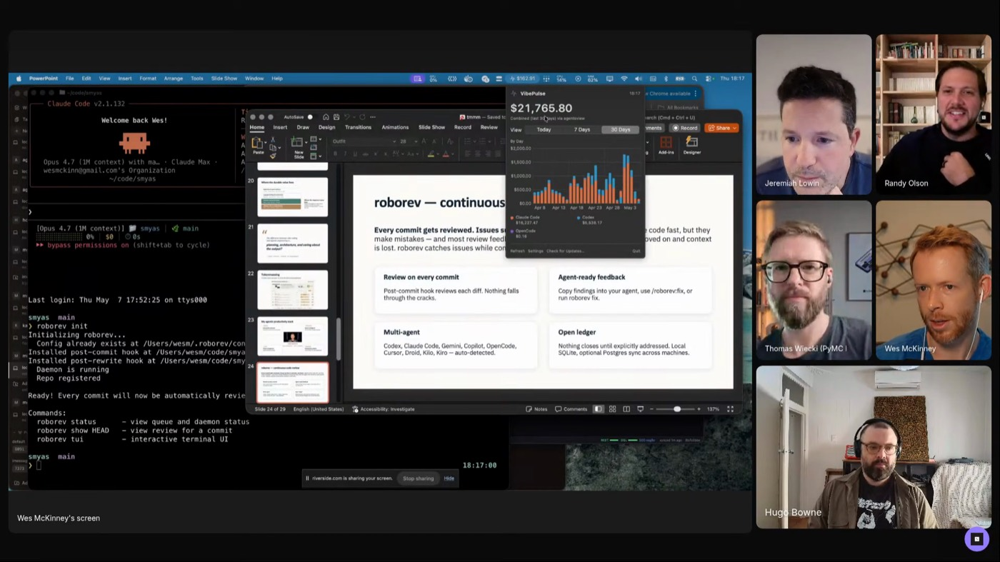
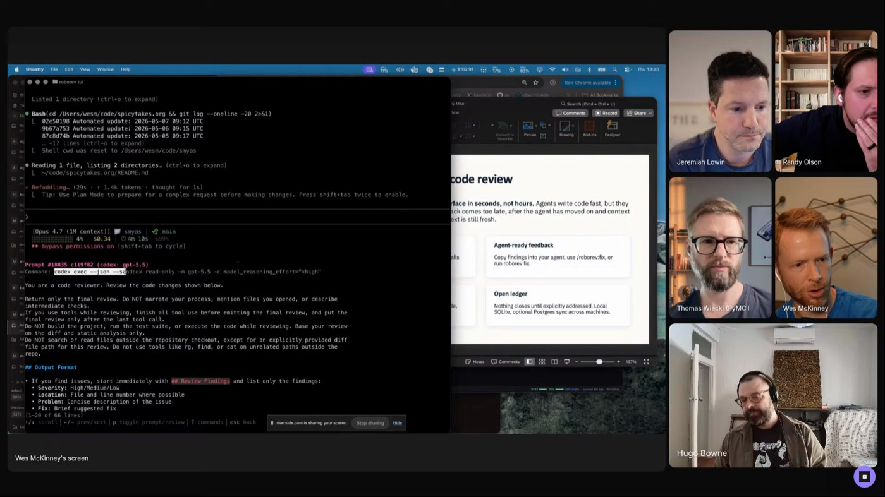
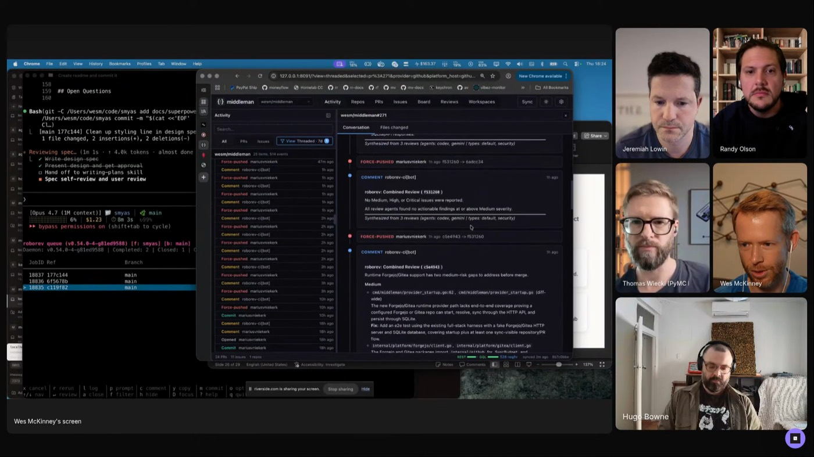

WES MCKINNEY
POSIT · PANDAS
ROBOREV
SOFTWARE FACTORY
TOKENMAXXER NO.1
WES MCKINNEY
POSIT · PANDAS
ROBOREV
SOFTWARE FACTORY
TOKENMAXXER NO.1
WES MCKINNEY
Wes has loved writing code for decades. His favorite thing about agents? "Not having to write code anymore." In his factory, agents commit every turn, RoboRev reads every commit, fix skills drain the queue, and Wes audits structure, not lines.

THE SOFTWARE FACTORY
"The difference between vibe coding and agentic engineering is planning, architecture, and caring about the output." Jesse Vincent's line, Wes's operating principle. Typing prompts into a terminal stops working once quality and scale matter. The factory is his answer.
The agentic-software-factory write-up captures Wes's production loop as one system: agents commit every turn, a RoboRev daemon reviews every commit in the background, review feedback accumulates in a ledger, and agents invoke a fix skill to drain it. Around that core, Superset gives every project worktree the same terminal stack, Middleman is a single pane of glass over GitHub activity, kata tracks issues locally, and AgentsView makes past agent sessions searchable.
Inside the write-up: the six rules below, a session walkthrough, anti-patterns, and a "what you need" list to assemble the stack yourself. The demo target on stream was Spicy Takes, his AI-summarized blog reader.

"Each day you wake up and you fire up Claude Code, it's what kind of Claude am I going to get today? Is it going to be smart Claude or dumb Claude?"
HOW THE FACTORY RUNS


"I'm already at my decision-making bandwidth. I can't make any more decisions."
THE STACK
"We're all just walking honeypots with our agent sessions."